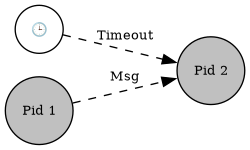
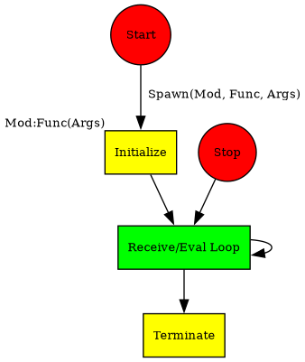

I’m sure you’ve met processes before, but only in the context of operating
systems. In Erlang, processes belong to the programming language and not the
operating system. This means that Erlang processes will have the same logical
behavior on any operating system, so we can write portable concurrent code that
can run on any operating system that supports Erlang.
In Erlang:
Creating and destroying processes is very fast.
Sending messages between processes is very fast.
Processes behave the same way on all operating systems.
We can have very large numbers of processes.
Processes share no memory and are completely independent.
The only way for processes to interact is through message passing.
In Erlang, creation of a parallel process is achieved by evaluating the spawn
primitive. This primitive creates a concurrent process and returns a process
identifier (PID) that can used to interact with the newly created process:
The syntax Pid ! Msg means "send the message Msg to the process Pid", where Msg
is from any valid Erlang data type. Also, Pid1 ! Pid2 ! ... ! Msg means send the
message Msg to all the processes Pid1, Pid2, and so on. The receive ... end
construct is used for a process to read a message that has been sent:
A message sent to non-existing processes are throw away.
Received messages are stored in the process' mailbox.
Mailboxes are scanned sequentially.
If a message fails to be pattern matched, it's saved in a queue for later
processing and the process waits for the next message. It is possible to
update a process with a new version of the code that retrieves those messages.
What happens when a message doesn’t match any of the clauses in a receive
statement? It remains in the process mailbox indefinitely, causing a memory
leakage that over time could also cause the runtime system to run out of
memory and crash. Not handling unknown messages should therefore be treated as
a bug. Either these messages should not have been sent to this process in the
first place, or they should be handled, possibly just by being retrieved from
the mailbox and ignored. (Cesarini and Thompson 2009, 109)
The erlang shell (erl) is itself a process, you can test its message-passing
functionalities by using the self function:
1> self() ! hello.
hello
2> receive X -> X end.
hello
Messages can be matched and selectivelly retrieved.
We can force an order (emulating a priority queue) by using multiple receives:
this way the message {foo, ...} is received before the message {bar, ...}.
Registered Processes
BIF
Description
register(Name, Pid)
Associates the name Name, an atom, with the process Pid.
registered/0
Returns a list of names that have been registered using register/2.
whereis(Name)
Returns the pid registered under Name, or undefined if the name is not registered.
registered()
Return a list of all registered processes in the system.
Sending messages to a non-existing registered process causes the calling
process to terminate with a badarg error.
It is a feature of Erlang memory management that atoms are not garbage
collected. Once you’ve created an atom, it remains in the atom table regardless
of whether it is referenced in the code. This can be a potential problem if you
decide to register transient processes with an alias derived from converting a
string to an atom with the list_to_atom/1 BIF. If you have millions of users
logging on to your system every day and you create a registered process for the
duration of their sessions, don’t be surprised if you end up running out of
memory.
You would be much better off storing the mapping of users to pids in a session
table. It is best to register only processes with a long life span, and if you
really must convert a string to use as an alias, use list_to_existing_atom/1 to
ensure that your system does not suffer memory leakages.
If the message Msg is received within the TimeOut, expr01 will be
executed. Otherwise, expr02 will be executed.
TimeOut is an integer denoting the time in miliseconds or the Atom infinity.

receive
Msg ->
<expr01>
after TimeOut ->
<expr02>
end
Skeleton of an Erlang Process
Most processes in Erlang share a common lifecycle:
Be spawned and initialized
Repeatedly receive messages, handle them, and send replies
Be terminated (normally or abnormally)

Concurrency-Related Bottlenecks
Processes are said to act as bottlenecks when, over time, they are sent messages at a
faster rate than they can handle them, resulting in large mailbox queues.
(…)
The only way to discover whether there are any bottlenecks is to observe the throughput
and message queue buildup when stress-testing the system. Simple remedies to message
queue problems can be achieved by optimizing the code and fine-tuning the operating
system and VM settings. (Cesarini and Thompson 2009, 109)
References:
Armstrong, Joe. 2013. “Programming Erlang: Software for a Concurrent World.”
Cesarini, Francesco, and Simon Thompson. 2009. Erlang Programming: A Concurrent Approach to Software Development. O’Reilly Media, Inc.